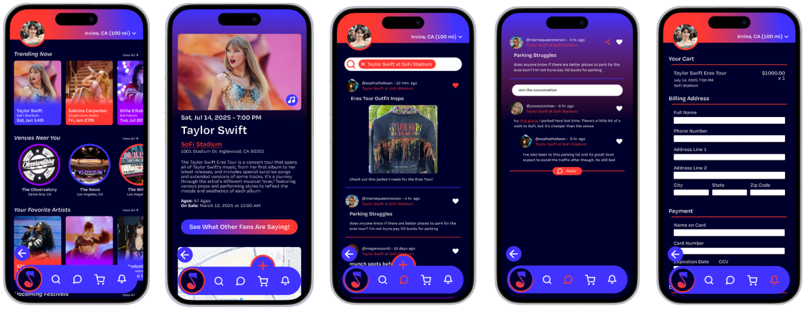
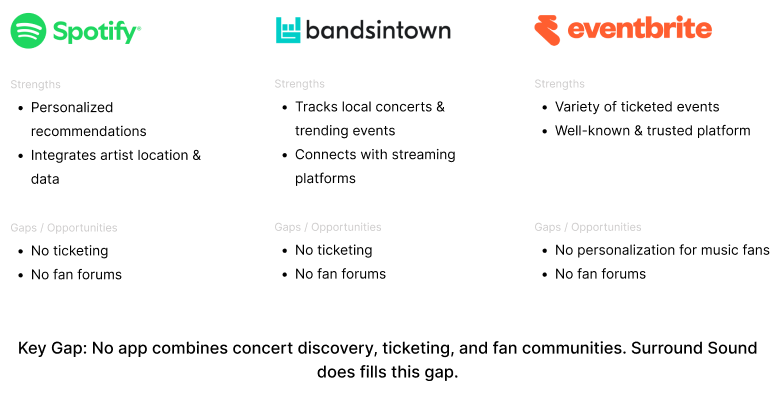
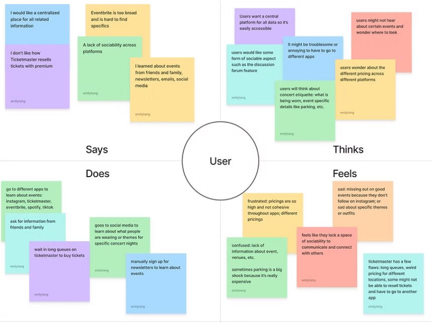
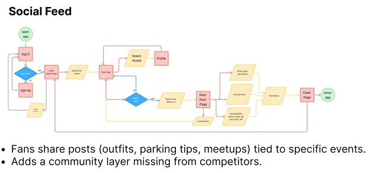
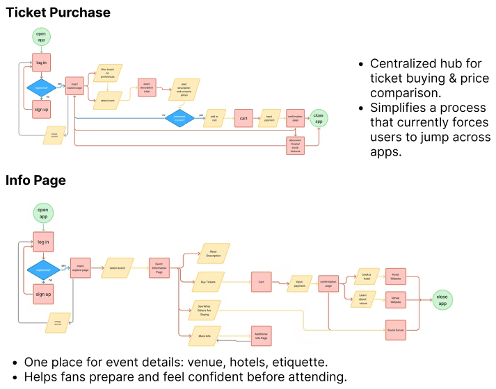
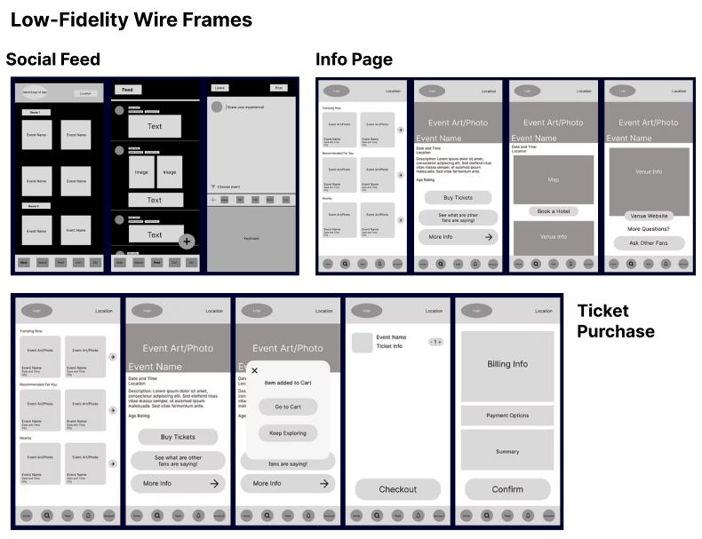
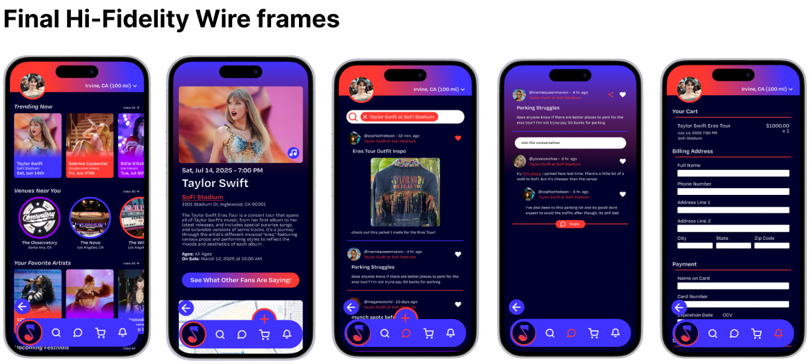

Problem
The Challenge of Concert Discovery
Concert lovers often miss events due to scattered information, multiple ticketing platforms, and no centralized hub for discovery and community. Fans want an all-in-one platform to find concerts, buy tickets, and connect with other fans, reducing frustration and making live music experiences easier and more social.
Goals
- Simplify concert discovery with a personalized feed.
- Centralize ticket purchasing within the app.
- Build a fan-driven community for tips and planning.
Solution
A Central Hub for Concert Discovery
Surround Sound is an all-in-one concert discovery and ticketing platform that helps music fans find events, purchase tickets, and connect with other fans through community-driven forums and personalized recommendations.

My Role & Responsibilities
As one of the designers on a collaborative team, I contributed to both the research foundation and the end-to-end design of the Surround Sound app. My responsibilities included:
- User Research: Conducted interviews and combined insights to understand how concert-goers discover events, what frustrates them, and what they expect from a music discovery experience.
- Interaction Design: Designed early wireframes and user flows that explored how users navigate events, artists, and venues within the app.
- High-Fidelity UI Design: Developed polished, high-fidelity mockups in Figma, focusing on a vibrant visual direction, clear hierarchy, and an intuitive browsing experience.
- Prototype Development: Built interactive prototypes to test navigation patterns and validate core flows.
- Usability Improvements: Iterated on layouts, visuals, and interactions based on peer feedback and user insights to improve clarity, speed of use, and overall experience.
Competitive Analysis

Key Insights
| Scattered Discovery | Ticketing Frustration | Community Gap |
|---|---|---|
| Music fans miss events relying on Instagram, TikTok, and friends. | Switching between multiple platforms causes confusion and missed opportunities. | Users want forums for outfits, parking tips, and meetups missing from competitors. |
| “If I didn’t follow fan accounts, I would have missed a lot.” | “Ticketmaster is just really stressful… queues are long.” | “I wish there was a forum for outfits and parking tips.” |
Empathy Map

“How might we create a central hub for discovering concerts?”
“How might we make planning events social and collaborative?”
Ideation
We brainstormed ways to improve concert discovery, ticketing, and fan engagement, then narrowed ideas to three key features: Social Feed, Ticket Purchase, and Info Page.


Design Process


Impact
Through usability testing, we identified key frustrations with navigation, missing feedback, and unexpected flows. Based on these insights, we refined the prototype to make the experience smoother and more intuitive.
Unexpected Actions
- Issue: Post and Add Tags buttons redirected users to the cart.
- Fix: Remapped flows → Post returns to the feed, Add Tags suggests hashtags.
Feedback & Confirmation
- Issue: Users weren’t sure if posts or ticket orders went through.
- Fix: Added confirmation pop-ups for posting, adding to cart, and checkout.
Leaving & Backtracking
- Issue: No clear way to exit pages like Create Post or Info Page.
- Fix: Introduced a Back/Leave button in the top bar for easy navigation.
These fixes, now reflected in our final design, improved clarity, reduced errors, and made users feel more confident navigating Surround Sound.
Reflection
This project taught me the importance of designing not just for usability, but for meaning. After sharing my work with UX designers from T-Mobile, I learned that color choices should go beyond aesthetics—red, for example, often signals warning or error, so in future iterations I would refine the palette to avoid confusion. I also learned the value of designing with developers in mind; while features like a floating nav bar look exciting in mockups, they may not be practical to build. In the future, I’ll focus on designs that are both user-friendly and developer-friendly. Overall, Surround Sound showed me how community-driven features can transform an experience, and I would continue improving event recommendations and accessibility.